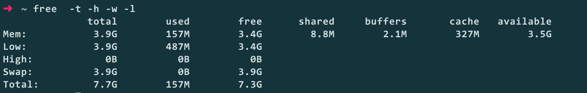

free
用途
查看系统内存使用情况, 如内存总量、已经使用的量、内核buffer/cache用量
使用
free options
输出内容

- total 内存总量
- used 已经被真实使用的
- free 未被使用的
- shared 共享内存
- buffer 内核buffer
- cache 内核cache
- available 还可以被程序使用的量
说明
Linux中会尽可能将空闲的内存用着内核的buffer和cache, 比如一共有4G内存， 真正已经被使用的只有1G, 但是free列显示的却不是3G, 而是非常小， 这就是因为剩下3G内存中的一部分被内核用作buffer和cache，如果程序需要使用更多内存时， 内核会释放buffer和cache来满足程序的内存需求
参数说明
-b/-k/-m/-g/--tera 分别设置不同的显示单位
不带参数
total used free shared buff/cache available
Mem: 4045848 157800 3554764 9044 333284 3636240
Swap: 4063228 0 4063228
-b
total used free shared buff/cache available
Mem: 4142948352 161587200 3640078336 9261056 341282816 3723509760
Swap: 4160745472 0 4160745472
-k
total used free shared buff/cache available
Mem: 4045848 157424 3555136 9044 333288 3636616
Swap: 4063228 0 4063228
-m
total used free shared buff/cache available
Mem: 3951 153 3471 8 325 3551
Swap: 3967 0 3967
-g
total used free shared buff/cache available
Mem: 3 0 3 0 0 3
Swap: 3 0 3
--tera
total used free shared buff/cache available
Mem: 0 0 0 0 0 0
Swap: 0 0 0
如果-b/k/m/g叠加使用时以最后一个为准
-gkm
total used free shared buff/cache available
Mem: 3951 155 3466 8 328 3549
Swap: 3967 0 3967
-h, --human以人可读的格式输出
total used free shared buff/cache available
Mem: 3.9G 156M 3.4G 8.8M 328M 3.5G
Swap: 3.9G 0B 3.9G
-w, --wide 将buff和cache列分开展示
total used free shared buffers cache available
Mem: 3.9G 155M 3.4G 8.8M 2.1M 326M 3.5G
Swap: 3.9G 0B 3.9G
-c, --count 指定重复执行的次数，通过-s指定间隔时间，如果没有指定默认为1s
~ free -c 5
total used free shared buff/cache available
Mem: 4045848 159952 3549804 9044 336092 3634048
Swap: 4063228 0 4063228
total used free shared buff/cache available
Mem: 4045848 159928 3549828 9044 336092 3634072
Swap: 4063228 0 4063228
total used free shared buff/cache available
Mem: 4045848 159920 3549836 9044 336092 3634080
Swap: 4063228 0 4063228
total used free shared buff/cache available
Mem: 4045848 159920 3549836 9044 336092 3634080
Swap: 4063228 0 4063228
total used free shared buff/cache available
Mem: 4045848 158320 3551436 9044 336092 3635680
Swap: 4063228 0 4063228
-l, --lohi Show detailed low and high memory statistics.
-s, --seconds seconds 指定间隔时间
--si Use power of 1000 not 1024.
-t, --total Display a line showing the column totals.